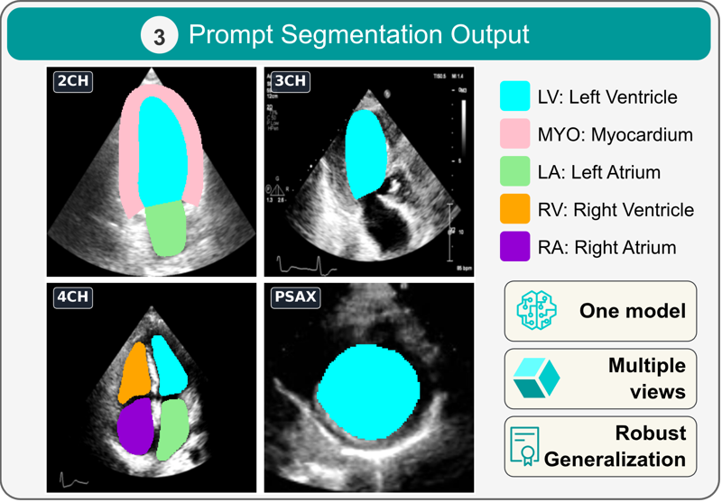

Prompt2Echo (P2Echo): Text-Prompted Multi-View Echocardiography Segmentation with One Model
arXiv preprint, 2026
Automated segmentation in multi-view echocardiography is essential for comprehensive cardiac assessment, yet remains challenging due to substantial anatomical and appearance variability across standard acoustic windows. In this paper, we present P2Echo, a unified framework capable of segmenting diverse cardiac structures across multiple standard echocardiographic views using a single model controlled by structured view-aware text prompts. Unlike recent foundation model adaptations that rely on implicit latent priors, P2Echo explicitly conditions the segmentation process via a novel Dynamic Image-Text Alignment (DyITA) module. DyITA integrates a differentiable routing mechanism and token differential operators to dynamically modulate decoder features according to the requested view and target structure. This allows the network to adaptively switch its processing pathways for different views without architectural changes. Extensive experiments on a large-scale internal dataset (seen during training) and held-out evaluation on three external datasets demonstrate that P2Echo matches or exceeds both view-specific specialists and state-of-the-art universal models at a fraction of their computational cost, offering an efficient, controllable solution for multi-plane cardiac analysis. Code is available at https://github.com/moeinheidari7829/P2Echo.